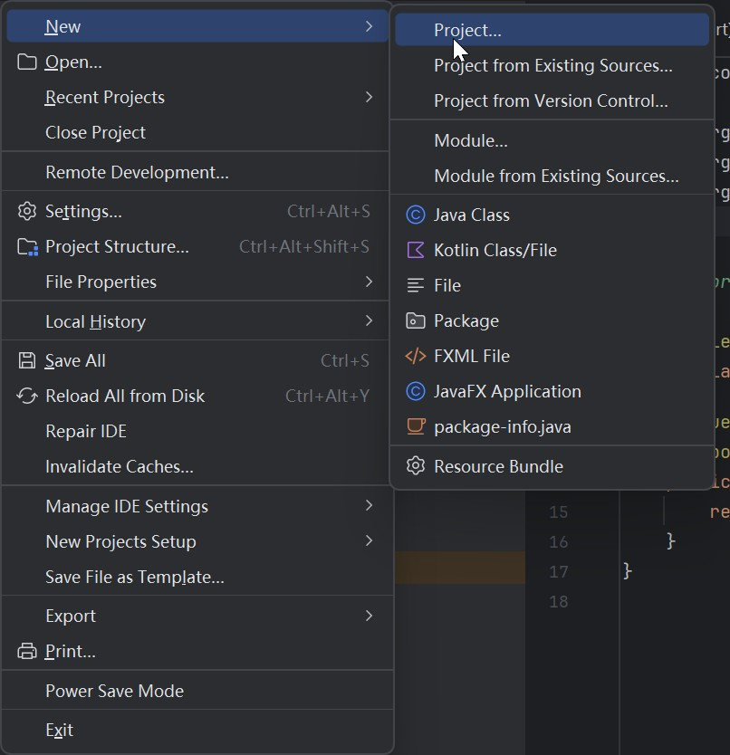
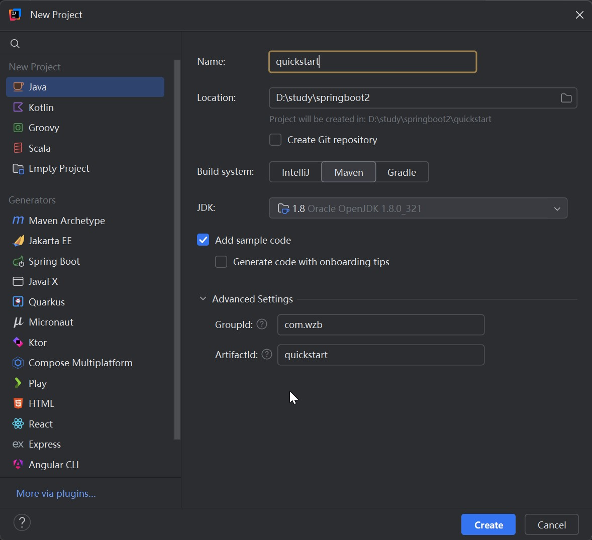
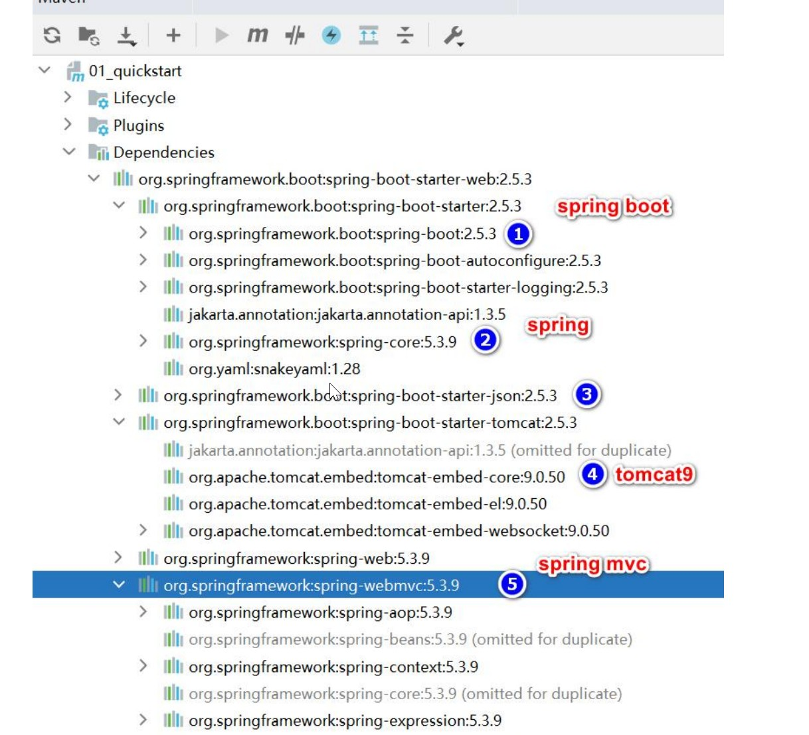
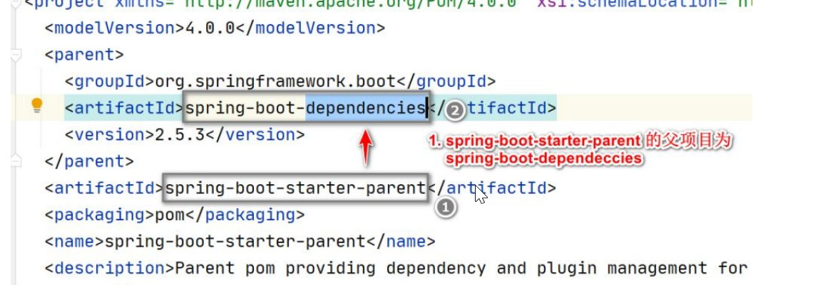
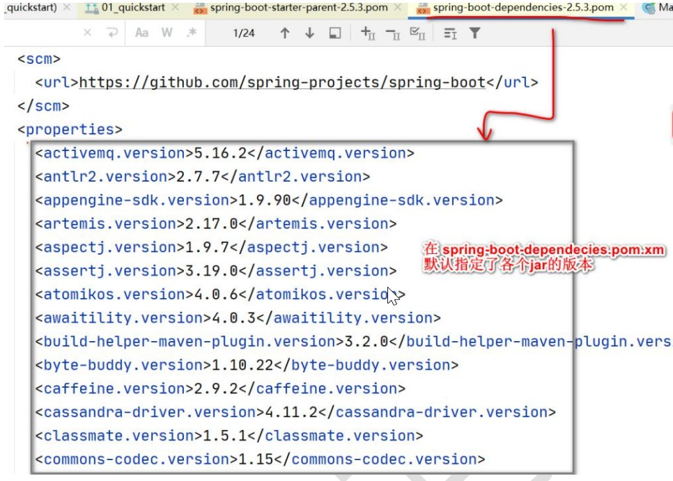
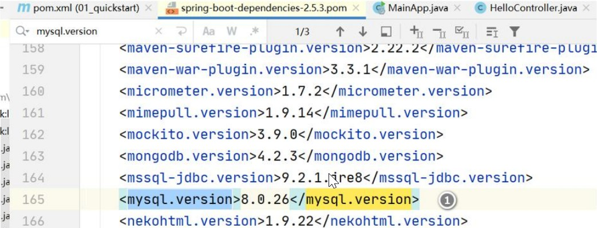
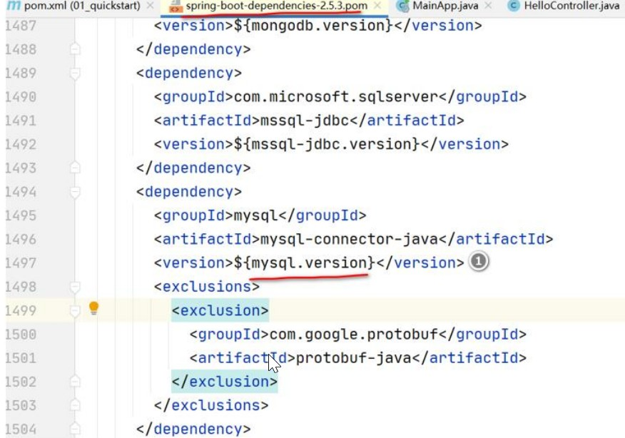

1 springboot基本介绍
1.1 SpringBoot是什么
两句话：
- Spring Boot 可以轻松创建独立的、生产级的基于Spring 的应用程序
- Spring Boot 直接嵌入 Tomcat、Jetty 或 Undertow ，可以”直接运行” SpringBoot 应用程序
1.2 SpringBoot快速入门
构建一个 SpringBoot 项目，浏览器发送/hello 请求 http://localhost:8080/hello，响应Hello:
这里目前学的的版本是SpringBoot2.7，maven3.6.3，jdk8


创建好之后在pom文件中引入SpringBoot相关依赖
<?xml version="1.0" encoding="UTF-8"?>
<project xmlns="http://maven.apache.org/POM/4.0.0"
xmlns:xsi="http://www.w3.org/2001/XMLSchema-instance"
xsi:schemaLocation="http://maven.apache.org/POM/4.0.0 http://maven.apache.org/xsd/maven-4.0.0.xsd">
<modelVersion>4.0.0</modelVersion>
<groupId>com.wzb</groupId>
<artifactId>quickstart</artifactId>
<version>1.0-SNAPSHOT</version>
<properties>
<maven.compiler.source>8</maven.compiler.source>
<maven.compiler.target>8</maven.compiler.target>
<project.build.sourceEncoding>UTF-8</project.build.sourceEncoding>
</properties>
<parent>
<groupId>org.springframework.boot</groupId>
<artifactId>spring-boot-starter-parent</artifactId>
<version>2.7.18</version>
</parent>
<dependencies>
<dependency>
<groupId>org.springframework.boot</groupId>
<artifactId>spring-boot-starter-web</artifactId>
</dependency>
</dependencies>
</project>
|
在com.wzb.springboot包中创建启动类Main,需要注解@SpringBootApplication
package com.wzb.springboot;
import org.springframework.boot.SpringApplication;
import org.springframework.boot.autoconfigure.SpringBootApplication;
@SpringBootApplication
public class Main {
public static void main(String[] args) {
SpringApplication.run(Main.class, args);
}
}
|
之后创建controller包，创建包下HelloController类
@Controller
public class HelloController {
@RequestMapping("/hello")
@ResponseBody
public String hello() {
return "hello";
}
}
|
启动项目后，默认端口是8080，访问http://localhost:8080/hello，可以发现 hello 字符串输出在了浏览器页面。
1.2.1 小结
- SpringBoot 比较传统的 SSM 开发， 简化整合步骤, 提高开发效率
- 简化了 Maven 项目的 pom.xml 依赖导入, 可以说是一键导入，如图

3.内置 Tomcat , 简化服务器的配置
1.3 SpringBoot与SpringMVC关系
1.3.1 梳理关系
- 他们的关系大概是: Spring Boot > Spring > Spring MVC
- Spring MVC 只是 Spring 处理 WEB 层请求的一个模块/组件, Spring MVC 的基石是Servlet
- Spring 的核心是 IOC 和 AOP, IOC 提供了依赖注入的容器, AOP 解决了面向切面编程
- Spring Boot 是为了简化开发, 推出的封神框架(约定优于配置[COC]，简化了Spring项目的配置流程), SpringBoot 包含很多组件/框架，Spring就是最核心的内容之一，也包含SpringMVC
- Spring 家族，有众多衍生框架和组件例如 boot、security、jpa 等, 他们的基础都是Spring
1.3.2 如何理解 -约定优于配置
- 约定优于配置(Convention over Configuration/COC)，又称按约定编程，是一种软件设计规范, 本质上是对系统、类库或框架中一些东西假定一个大众化合理的默认值(缺省值)
- 例如在模型中存在一个名为 User 的类，那么对应到数据库会存在一个名为user 的表，只有在偏离这个约定时才需要做相关的配置 (例如你想将表名命名为t_user 等非user 时才需要写关于这个名字的配置)
- 简单来说就是假如你所期待的配置与约定的配置一致，那么就可以不做任何配置，约定不符合期待时, 才需要对约定进行替换配置
- 约定其实就是一种规范，遵循了规范，那么就存在通用性，存在通用性，那么事情就会变得相对简单，程序员之间的沟通成本会降低，工作效率会提升，合作也会变得更加简单
2 依赖管理和自动配置
2.1 依赖管理
2.1.1 什么是依赖管理
spring-boot-starter-parent 还有父项目, 声明了开发中常用的依赖的版本号，并且进行 自动版本仲裁 , 即如果程序员没有指定某个依赖jar 的版本，则以父项目指定的版本为准


2.1.2 修改自动仲裁/默认版本号
需求说明: 将 SpringBoot mysql 驱动修改成 5.1.49

查看 spring-boot-dependencies.pom 里面规定当前依赖的版本对应的key , 这里是mysql.version

修改 springboot2\quickstart\pom.xml 重写配置, 当更新Maven 时，就依赖到新的mysql 驱动.
<properties>
<mysql.version>5.1.49</mysql.version>
</properties>
<dependencies>
<dependency>
<groupId>org.springframework.boot</groupId>
<artifactId>spring-boot-starter-web</artifactId>
</dependency>
<dependency>
<groupId>mysql</groupId>
<artifactId>mysql-connector-java</artifactId>
</dependency>
</dependencies>
|
2.2 starter 场景启动器
2.2.1 starter场景启动器基本介绍
1.开发中我们引入了相关场景的starter**，这个场景中所有的相关依赖都引入进来了，比如我们做web开发引入了，该starter将导入与web开发相关的所有包**
2.依赖树:可以看到spring-boot-starter-web，帮我们引入了spring-webmvc，spring-web开发模块，还引入了spring-boot-starter-tomcat场景，spring-boot-starter-json场景，这些场景下面又引入了一大堆相关的包，这些依赖项可以快速启动和运行一个项目，提高开发效率.

3.所有场景启动器最基本的依赖就是spring-boot-starter
2.2.2 官方提供的starter
1.在开发中我们经常会用到spring-boot-starter-xxx**，比如spring-boot-starter-web，该场景是用作web开发，也就是说xxx是某种开发场景。**
2.我们只要引入starter，这个场景的所有常规需要的依赖我们都自动引入。
2.2.3 第三方starter
1.SpringBoot也支持第三方starter
2.第三方starter不要从spring-boot开始，因为这是官方spring-boot保留的命名方式的。第三方启动程序通常以项目名称开头。例如，名为thirdpartyproject的第三方启动程序项目通常被命名为thirdpartyproject-spring-boot-starter。
3.也就是说：xxx-spring-boot-starter是第三方为我们提供的简化开发的场景启动器
2.3 自动配置
2.3.1 自动配置功能
1.SpringBoot自动配置Tomcat、SpringMVC、Web常用功能:比如字符过滤器等等
2.默认主程序所在的包及其子包下会被扫描

2.3.2 如何修改默认扫描包结构
package.com.wzb;
importorg.springframework.stereotype.Controller;
importorg.springframework.web.bind.annotation.RequestMapping; importorg.springframework.web.bind.annotation.ResponseBody;
@Controller
public class HiController{
@RequestMapping("/hi")
@ResponseBody
public String hi(){
return"hi~,spring boot";
}
}
|
修改MainApp.java,增加扫描的包,并完成测试
@SpringBootApplication(scanBasePackages="com.wzb")
public class MainApp{
|
2.3.3 resources\application.properties 配置
- SpringBoot 项目最重要也是最核心的配置文件就是 application.properties，所有的框架配置都可以在这个配置文件中说明
● 各 种 配 置 都 有 默 认 , 可 以 在 resources\application.properties 修改, application.properties 文件我们可以手动创建
server.port=10000
spring.servlet.multipart.max-file-size=10MB
|
常用配置
server.port=10000
server.servlet.context-path=/allModel
mybatis.type-aliases-package=com.cxs.allmodel.model
mybatis.mapper-locations=classpath:com/cxs/allmodel/mapper
spring.session.timeout=18000
mysql.one.jdbc-url=jdbc:mysql://127.0.0.1:3306/test?serverTimezone=Asia/Shanghai&useSSL=false
mysql.one.username=
mysql.one.password=
mysql.one.maximum-pool-size=15
logging.level.com.cxs.allmodel.=debug
logging.level.com.cxs.allmodel.mapper=debug
logging.level.org.springframework.web=info
logging.level.org.springframework.transaction=info
logging.level.org.apache.ibatis=info
logging.level.org.mybatis=info
logging.level.com.github.pagehelper = info
logging.level.root=info
logging.file=/tmp/api/allmodel.log
pagehelper.reasonable=true
pagehelper.supportMethodsArguments=true
pagehelper.params=count=countSql
spring.jackson.serialization.fail-on-empty-beans=false
spring.jackson.date-format=yyyy-MM-dd HH:mm:ss
spring.jackson.time-zone=GMT+8
spring.http.encoding.charset=utf8
spring.redis.host=
spring.redis.port=
spring.redis.database=14
|
自定义配置
● 还可以在 properties 文件中自定义配置，通过@Value(“${}”)获取对应属性值
my.website=https://www.baidu.com
|
@Value("${my.website}")
private String bdUrl;
|
SpringBoot 在哪配置读取 application.properites?打开 ConfigFileApplicationListener.java , 看一下源码

满足DEFAULT_SEARCH_LOCATIONS中的所有路径就可以了
SpringBoot 所 有 的 自 动 配 置 功 能 都 在 spring-boot-autoconfigure 包
在 SpringBoot 的 自 动 配 置 包 , 一 般 是 XxxAutoConfiguration.java, 对应XxxxProperties.java
3 容器功能
3.1 Spring 注入组件的注解
3.1.1 @Component、@Controller、 @Service、@Repository
这些在 Spring 中的传统注解仍然有效，通过这些注解可以给容器注入组件
3.2 @Configuration
3.2.1 应用实例
@Configuration
public class BeanConfig {
@Bean
public Monster monster01() {
return new Monster(100, "牛魔王", 500, "芭蕉扇");
}
}
|
修改 MainApp.java , 从配置文件/容器获取 bean , 并完成测试
public static void main(String[] args) {
ConfigurableApplicationContext ioc =
SpringApplication.run(MainApp.class, args);
Monster monster01 = ioc.getBean("monster01", Monster.class);
System.out.println(monster01);
Monster monster02 = ioc.getBean("monster01", Monster.class);
System.out.println(monster01 == monster02);
}
|
3.2.2 @Configuration 注意事项和细节
- 配置类本身也是组件， 因此也可以获取, 测试 修改
public static void main(String[] args) {
ConfigurableApplicationContext ioc =
SpringApplication.run(MainApp.class, args);
Monster monster01 = ioc.getBean("monster01", Monster.class);
System.out.println(monster01);
韩顺平Java 工程师Monster monster02 = ioc.getBean("monster01", Monster.class);
System.out.println(monster01 == monster02);
BeanConfig beanConfig = ioc.getBean(BeanConfig.class);
System.out.println("beanConfig= " + beanConfig);
}
|
2.SpringBoot2 新增特性： proxyBeanMethods 指定 Full 模式和Lite 模式
@Configuration(proxyBeanMethods = false)
public class BeanConfig {
@Bean
public Monster monster01() {
return new Monster(100, "牛魔王", 500, "芭蕉扇");
}
}
package com.hspedu.springboot;
import com.hspedu.springboot.bean.Monster;
import com.hspedu.springboot.config.BeanConfig;
import org.springframework.boot.SpringApplication;
import org.springframework.boot.autoconfigure.SpringBootApplication;
import org.springframework.context.ConfigurableApplicationContext;
@SpringBootApplication(scanBasePackages = "com.hspedu")
public class MainApp {
public static void main(String[] args) {
ConfigurableApplicationContext ioc =
SpringApplication.run(MainApp.class, args);
Monster monster01 = ioc.getBean("monster01", Monster.class);
System.out.println(monster01);
Monster monster02 = ioc.getBean("monster01", Monster.class);
System.out.println(monster01 == monster02);
BeanConfig beanConfig = ioc.getBean(BeanConfig.class);
System.out.println("beanConfig= " + beanConfig);
Monster monster03 = beanConfig.monster01();
Monster monster04 = beanConfig.monster01();
System.out.println("monster03 == monster04 : " + (monster03 == monster04));
}
}
|
3.3 @Import
@Import 方式注入的组件, 默认组件的名字就是全类名
@Import({Dog.class, Cat.class})
@Configuration(proxyBeanMethods = false)
public class BeanConfig {
}
|
3.4 @Conditional
3.4.1 @Conditional 介绍
1. 条件装配：满足 Conditional 指定的条件，则进行组件注入
- @Conditional 是一个根注解，下面有很多扩展注解
@Configuration(proxyBeanMethods = false)
@Scope("prototype")
public class BeanConfig2 {
@Bean
public Monster monster02(){
return new Monster("小怪兽", 10);
}
@Bean
@ConditionalOnBean(name="monster02")
public Dog dog01(){
return new Dog("小狗", 10);
}
}
|
3.5 @ImportResource
作用：原生配置文件引入, 也就是可以直接导入 Spring 传统的beans.xml ，可以认为是 SpringBoot 对 Spring 容器文件的兼容
将 beans.xml 导入到 BeanConfig.java 配置类
@Configuration
@ImportResource("classpath:beans.xml")
public class BeanConfig3 {
}
|
3.6 配置绑定
一句话：使用 Java 读取到 SpringBoot 核心配置文件 application.properties 的内容，并且把它封装到 JavaBean 中
@Component
@ConfigurationProperties(prefix = "furn01")
public class Furn {
private Integer id;
private String name;
private Double price;
public Integer getId() {
return id;
}
public void setId(Integer id) {
this.id = id;
}
public String getName() {
return name;
}
public void setName(String name) {
this.name = name;
}
public Double getPrice() {
return price;
}
public void setPrice(Double price) {
this.price = price;
}
}
package com.hspedu.springboot.controller;
import com.hspedu.springboot.bean.Furn;
import org.springframework.beans.factory.annotation.Autowired;
import org.springframework.stereotype.Controller;
import org.springframework.web.bind.annotation.RequestMapping;
import org.springframework.web.bind.annotation.ResponseBody;
@Controller
public class HelloController {
@RequestMapping("/hello")
@ResponseBody
public String hello(){
return "hello, spring boot";
}
@Autowired
Furn furn;
@RequestMapping("/furn")
@ResponseBody
public Furn furn(){
return furn;
}
}
|
配置绑定还有第 2 种方式,效果一样，注意: 注销@Component 需 要 在 BeanConfig.java( 也可以是其它配置类) 配置@EnableConfigurationProperties(Furn.class), 否则会提示错误

@EnableConfigurationProperties(Furn.class)
public class BeanConfig {
|
4 Lombok
4.1 Lomkbok的作用
- 简化 JavaBean 开发, 可以使用 Lombok 的注解让代码更加简洁
- Java 项目中，很多没有技术含量又必须存在的代码：POJO 的getter/setter/toString；异常处理；I/O 流的关闭操作等等，这些代码既没有技术含量，又影响着代码的美观，Lombok应运而生
4.2 Lomkbok常用注解
@Data: 注解在类上;提供类所有属性的 aetting 和 seting 方法，此外还提供了equals、canEaual、hashCode、toString方法@Setter:注解在属性上;为属性提供 setting 方法@Gettter :注解在属性上;为属性提供 getting 方法@Log4j:注解在类上;为类提供一个 属性名为log 的 log4j日志对象@NoArgsConstructor:注解在类上;为类提供一个无参的构造方法@AllArgsConstructor:注解在类上;为类提供一个全参的构造方法@Cleanup:可以关闭流@Builder: 被注解的类加个构造者模式@Synchronized :加个同步锁@SneakyThrows:等同于try/catch 捕获异常@NonNull:如果给参数加个这个注解 参数为null会抛出空指针异常@Value:注解和@Data类似，区别在于它会把所有成员变量默认定义为private final修饰，并且不会生成set方法。
4.3 Lombok应用
在 pom.xml 引入 lombok，springboot会自动引入该依赖
<dependency>
<groupId>org.projectlombok</groupId>
<artifactId>lombok</artifactId>
</dependency>
|
@ToString
@Data
@Component
@ConfigurationProperties(prefix = "furn01")
public class Furn {
private Integer id;
private String name;
private Double price;
}
|
支持日志输出，建议使用@Slf4j
@Slf4j
@Controller
public class HelloController {
@RequestMapping("/hello")
@ResponseBody
public String hello() {
return "hello, spring boot";
}
@Autowired
Furn furn;
@RequestMapping("/furn")
@ResponseBody
public Furn furn() {
log.info("furn = " + furn);
log.info("furn = {} ", furn);
return furn;
}
|
5 yaml
5.1 yaml介绍
1、YAML 以数据做为中心，而不是以标记语言为重点
2、YAML 仍然是一种标记语言, 但是和传统的标记语言不一样, 是以数据为中心的标记语言.
3、YAML 非常适合用来做以数据为中心的配置文件 [springboot : application.yml]
5.2 yaml基本语法
- 形式为 key: value；注意: 后面有空格
- 区分大小写
- 使用缩进表示层级关系
- 缩进不允许使用 tab，只允许空格 [有些地方也识别 tab , 推荐使用空格]
- 缩进的空格数不重要，只要相同层级的元素左对齐即可
- 字符串无需加引号
- yml 中, 注释使用 #
5.3 数据类型
5.3.1 字面量
字面量：单个的、不可再分的值。date、boolean、string、number、null
保存形式为 key: value
monster:
id: 100
name: xxx
age: 50
|
5.3.2 对象
对象：键值对的集合, 比如 map、hash、set、object
monster: {id: 100,name: 牛魔王}
k:
k1: v1
k2: v2
k3: v3
monster:
id: 100
name: 牛魔王
skill:
- 飞
- 跑
hobby: [喝酒，吃肉]
brand: {key01: 小米,key02: 比亚迪 }
|
5.3.3 数组
数组：一组按次序排列的值, 比如 array、list、queue
行内写法： k: [v1,v2,v3]
hobby: [打篮球, 打乒乓球, 踢足球]
k:
- v1
- v2
- v3
hobby:
- 打篮球
- 打乒乓球
- 踢足球
|
5.4 yaml 使用细节
如 果 application.properties 和 application.yaml 有 相同的前缀值绑定，则application.properties 优先级高, 开发时，应当避免
6 静态资源访问
6.1 基本介绍
只要静态资源放在类路径下： /static 、 /public 、 /resources 、/META-INF/resources可以被直接访问- 对应文件 WebProperties.java
private static final String[] CLASSPATH_RESOURCE_LOCATIONS={ "classpath:/META-INF/resources/", "classpath:/resources/", "classpath:/static/", "classpath:/public/" };
|
常见静态资源：JS、CSS 、图片（.jpg .png .gif .bmp .svg）、字体文件(Fonts)等
访问方式 ：默认: 项目根路径/ + 静态资源名 比如 http://localhost:8080/hi.jpg .
6.2 使用注意
问题：静态资源访问原理：静态映射是 /** , 也就是对所有请求拦截，请求进来，先看Controller能不能处理，不能处理的请求交给静态资源处理器，如果静态资源找不到则响应404页面
改变静态资源访问前缀，比如我们希望 http://localhost:8080/wzb/* 去请求静态资源, 应用场景：静态资源访问前缀和控制器请求路径冲突
需要在配置文件中配置
spring:
mvc:
static-path-pattern: /wzb/**
|
改变默认的静态资源路径，比如希望在类路径下增加 wzbimg 目录作为静态资源路径, 也就是希望resources目录下可以访问wzbimg中的资源
spring:
mvc:
static-path-pattern: /hspres/**
web:
resources:
static-locations: [classpath:/wzbimg/, classpath:/public/, classpath:/static/]
|
7 Rest风格请求处理
7.1 基本介绍
Rest 风格支持（使用 HTTP 请求方式动词来表示对资源的操作）
举例说明：
● 请求方式: /monster
● GET-获取怪物
● DELETE-删除怪物
● PUT-修改怪物
● POST-保存妖怪
7.2 应用实例
@RestController
public class MonsterController {
@GetMapping("/monster")
public String getMonster() {
return "GET-查询妖怪";
}
@PostMapping("/monster")
public String saveMonster() {
return "POST-添加妖怪";
}
@PutMapping("/monster")
public String putMonster() {
return "PUT-修改妖怪";
}
@DeleteMapping("/monster")
public String deleteMonster() {
return "DELETE-删除妖怪";
}
}
|
7.2 注意事项和细节
1、客户端是 PostMan 可以直接发送 Put、delete 等方式请求，可不设置Filter
2、如果要 SpringBoot 支持 页面表单的 Rest 功能, 则需要注意如下细节
- Rest 风 格 请 求 核 心 Filter ； HiddenHttpMethodFilter ，表单请求会被HiddenHttpMethodFilter 拦截 , 获取到表单 _method 的值，再判断是PUT/DELETE/PATCH(注释: PATCH 方法是新引入的，是对 PUT 方法的补充，用来对已知资源进行局部更新)
- 如果要 SpringBoot 支持 页面表单的 Rest 功能, 需要在 application.yml 启用filter 功能, 否则无效
- 修改 application.yml 启用 filter 功能
spring:
mvc:
static-path-pattern: /wzb/**
hiddenmethod:
filter:
enabled: true #开启页面表单的 Rest 功能
|
3、 @ResController 是一个复合注解, 含有@ResponseBody, 所以springboot 底层(springmvc), 在处理，如果单纯用@Controller注解，就不会返回数据给客户端，而是找视图解析器处理，比如return “test”，就会找test.html静态页面
解决方法：如果已经有了对应的test.html，可以在配置文件进行配置，返回“test”字符串也可以找到页面
spring:
mvc:
static-path-pattern: /wzb
|
8 接收参数相关注解
8.1 基本介绍
1. @PathVariable
作用：从URL路径中提取变量值。
使用示例
@RestController
@RequestMapping("/api/users")
public class UserController {
@GetMapping("/{id}")
public User getUser(@PathVariable Long id) {
return userService.findById(id);
}
@GetMapping("/{userId}/orders/{orderId}")
public Order getOrder(@PathVariable("userId") Long uid,
@PathVariable("orderId") Long oid) {
return orderService.findOrder(uid, oid);
}
@GetMapping("/{name:[a-z-]+}-{version:\\d\\.\\d\\.\\d}")
public String getVersion(@PathVariable String name,
@PathVariable String version) {
return name + ":" + version;
}
@GetMapping("/{type}/{id}")
public Map<String, String> getAllPathVariables(
@PathVariable Map<String, String> pathVars) {
return pathVars;
}
}
|
作用：从HTTP请求头中提取值。
使用示例
@RestController
public class HeaderController {
@GetMapping("/header")
public String getHeader(@RequestHeader("User-Agent") String userAgent) {
return "User-Agent: " + userAgent;
}
@GetMapping("/language")
public String getLanguage(
@RequestHeader(value = "Accept-Language", defaultValue = "zh-CN") String lang) {
return "Language: " + lang;
}
@GetMapping("/content-length")
public String getContentLength(@RequestHeader("Content-Length") long contentLength) {
return "Content-Length: " + contentLength;
}
@GetMapping("/all-headers")
public Map<String, String> getAllHeaders(
@RequestHeader Map<String, String> headers) {
return headers;
}
@GetMapping("/multi-header")
public List<String> getMultiValueHeader(
@RequestHeader("Accept") List<String> acceptHeaders) {
return acceptHeaders;
}
}
|
3. @ModelAttribute
作用：将请求参数绑定到模型对象。
使用示例
@RestController
public class ModelController {
@PostMapping("/user")
public String createUser(@ModelAttribute User user) {
return "User: " + user.getName() + ", Age: " + user.getAge();
}
@ModelAttribute
public void addCommonAttributes(Model model) {
model.addAttribute("currentTime", LocalDateTime.now());
}
@GetMapping("/product")
public String getProduct(@ModelAttribute("prod") Product product) {
return product.toString();
}
}
public class User {
private String name;
private Integer age;
private String email;
public User() {}
public User(String name, Integer age, String email) {
this.name = name;
this.age = age;
this.email = email;
}
public String getName() { return name; }
public void setName(String name) { this.name = name; }
public Integer getAge() { return age; }
public void setAge(Integer age) { this.age = age; }
public String getEmail() { return email; }
public void setEmail(String email) { this.email = email; }
}
|
4. @RequestParam
作用：从URL查询参数或表单数据中提取值。
使用示例
@RestController
public class ParamController {
@GetMapping("/search")
public String search(@RequestParam String keyword) {
return "Searching for: " + keyword;
}
@GetMapping("/page")
public String getPage(
@RequestParam(value = "page", defaultValue = "1") int page,
@RequestParam(value = "size", defaultValue = "10") int size) {
return String.format("Page: %d, Size: %d", page, size);
}
@GetMapping("/optional")
public String optionalParam(@RequestParam(required = false) String filter) {
return filter != null ? "Filter: " + filter : "No filter";
}
@GetMapping("/all-params")
public Map<String, String> getAllParams(
@RequestParam Map<String, String> allParams) {
return allParams;
}
@GetMapping("/multi")
public List<String> getMultiParams(@RequestParam List<String> tags) {
return tags;
}
@GetMapping("/array")
public String[] getArrayParams(@RequestParam String[] ids) {
return ids;
}
}
|
5. @MatrixVariable
作用：从URL路径的矩阵变量中提取值（需要额外配置）。
配置和使用示例
@Configuration
public class WebConfig implements WebMvcConfigurer {
@Override
public void configurePathMatch(PathMatchConfigurer configurer) {
UrlPathHelper urlPathHelper = new UrlPathHelper();
urlPathHelper.setRemoveSemicolonContent(false);
configurer.setUrlPathHelper(urlPathHelper);
}
}
@RestController
public class MatrixController {
@GetMapping("/cars/{car}")
public String getCar(@PathVariable String car,
@MatrixVariable String color,
@MatrixVariable String year) {
return String.format("Car: %s, Color: %s, Year: %s", car, color, year);
}
@GetMapping("/owners/{ownerId}/pets/{petId}")
public String findPet(
@MatrixVariable(pathVar = "ownerId") String q1,
@MatrixVariable(pathVar = "petId") String q2) {
return "Owner query: " + q1 + ", Pet query: " + q2;
}
@GetMapping("/products/{category}")
public Map<String, String> getMatrixVars(
@MatrixVariable Map<String, String> matrixVars) {
return matrixVars;
}
@GetMapping("/filter/{criteria}")
public List<String> getMultiMatrix(
@MatrixVariable List<String> filters) {
return filters;
}
}
|
6. @CookieValue
作用：从HTTP Cookie中提取值。
使用示例
@RestController
public class CookieController {
@GetMapping("/cookie")
public String getCookie(@CookieValue("JSESSIONID") String sessionId) {
return "Session ID: " + sessionId;
}
@GetMapping("/theme")
public String getTheme(
@CookieValue(value = "theme", defaultValue = "light") String theme) {
return "Theme: " + theme;
}
@GetMapping("/full-cookie")
public String getFullCookie(@CookieValue("JSESSIONID") Cookie sessionCookie) {
return String.format("Name: %s, Value: %s, Domain: %s",
sessionCookie.getName(),
sessionCookie.getValue(),
sessionCookie.getDomain());
}
@GetMapping("/set-cookie")
public ResponseEntity<String> setCookie() {
ResponseCookie cookie = ResponseCookie.from("user-token", "abc123")
.httpOnly(true)
.secure(true)
.path("/")
.maxAge(Duration.ofHours(1))
.build();
return ResponseEntity.ok()
.header(HttpHeaders.SET_COOKIE, cookie.toString())
.body("Cookie set");
}
}
|
7. @RequestBody
作用：将HTTP请求体绑定到方法参数，主要用于处理JSON/XML等格式的数据。
使用示例
@RestController
public class BodyController {
@PostMapping("/user")
public User createUser(@RequestBody User user) {
return userService.save(user);
}
@PostMapping("/map")
public Map<String, Object> handleMap(@RequestBody Map<String, Object> payload) {
payload.put("processed", true);
payload.put("timestamp", LocalDateTime.now());
return payload;
}
@PostMapping("/batch")
public String batchCreate(@RequestBody List<User> users) {
return "Created " + users.size() + " users";
}
@PostMapping("/raw")
public String handleRawBody(@RequestBody String rawBody) {
return "Received: " + rawBody;
}
@PostMapping("/entity")
public String handleEntity(HttpEntity<String> entity) {
String body = entity.getBody();
HttpHeaders headers = entity.getHeaders();
return String.format("Body: %s, Content-Type: %s",
body, headers.getContentType());
}
@PostMapping("/validate")
public ResponseEntity<?> createValidUser(@Valid @RequestBody User user) {
User savedUser = userService.save(user);
return ResponseEntity.ok(savedUser);
}
}
public class User {
@NotBlank(message = "姓名不能为空")
private String name;
@Min(value = 0, message = "年龄不能小于0")
@Max(value = 150, message = "年龄不能大于150")
private Integer age;
@Email(message = "邮箱格式不正确")
private String email;
}
|
8.2 复杂参数接收请求数据
1. 常用复杂参数类型
@Controller
public class CommonParamsController {
public String handleRequest(
Map<String, Object> map, // 数据存储
Model model, // 模型数据
RedirectAttributes redirectAttributes, // 重定向属性
HttpServletResponse response, // HTTP响应
HttpSession session // Session
) {
return "view";
}
}
|
2. Map 和 Model - Request域数据
@Controller
public class DataController {
@GetMapping("/user")
public String getUser(Map<String, Object> map, Model model) {
map.put("name", "张三");
model.addAttribute("age", 25);
return "user";
}
@GetMapping("/data")
@ResponseBody
public Map<String, Object> getData() {
Map<String, Object> data = new HashMap<>();
data.put("code", 200);
data.put("message", "成功");
return data;
}
}
|
3. RedirectAttributes - 重定向携带数据
java
@Controller
public class RedirectController {
@PostMapping("/addUser")
public String addUser(User user, RedirectAttributes redirectAttributes) {
try {
userService.save(user);
redirectAttributes.addFlashAttribute("message", "用户添加成功");
redirectAttributes.addFlashAttribute("alertType", "success");
} catch (Exception e) {
redirectAttributes.addFlashAttribute("message", "添加失败");
redirectAttributes.addFlashAttribute("alertType", "error");
}
return "redirect:/user/list";
}
@GetMapping("/search")
public String search(String keyword, RedirectAttributes redirectAttributes) {
redirectAttributes.addAttribute("keyword", keyword);
redirectAttributes.addAttribute("page", 1);
return "redirect:/result";
}
}
|
4. HttpServletResponse - 响应控制
@Controller
public class ResponseController {
@GetMapping("/download")
public void downloadFile(HttpServletResponse response) throws IOException {
response.setContentType("application/octet-stream");
response.setHeader("Content-Disposition", "attachment; filename=file.txt");
OutputStream os = response.getOutputStream();
os.write("文件内容".getBytes());
os.flush();
}
@GetMapping("/json")
public void returnJson(HttpServletResponse response) throws IOException {
response.setContentType("application/json;charset=utf-8");
PrintWriter out = response.getWriter();
out.write("{\"status\":\"success\"}");
out.flush();
}
}
|
5. HttpSession - 会话管理
@Controller
public class SessionController {
@PostMapping("/login")
public String login(User user, HttpSession session) {
session.setAttribute("currentUser", user);
session.setAttribute("loginTime", LocalDateTime.now());
session.setMaxInactiveInterval(30 * 60);
return "redirect:/home";
}
@GetMapping("/profile")
public String profile(HttpSession session, Model model) {
User user = (User) session.getAttribute("currentUser");
model.addAttribute("user", user);
return "profile";
}
@GetMapping("/logout")
public String logout(HttpSession session) {
session.invalidate();
return "redirect:/login";
}
}
|
6. 实际应用示例
@Controller
public class PracticalExample {
@PostMapping("/submitOrder")
public String submitOrder(Order order,
HttpSession session,
RedirectAttributes redirectAttributes) {
User user = (User) session.getAttribute("currentUser");
order.setUserId(user.getId());
try {
orderService.create(order);
redirectAttributes.addFlashAttribute("msg", "订单创建成功");
} catch (Exception e) {
redirectAttributes.addFlashAttribute("msg", "创建失败：" + e.getMessage());
}
return "redirect:/order/result";
}
@GetMapping("/export")
public void exportData(String type, HttpServletResponse response) throws IOException {
response.setContentType("application/vnd.ms-excel");
response.setHeader("Content-Disposition", "attachment; filename=data.xlsx");
excelService.export(data, response.getOutputStream());
}
}
|
8.3 自定义对象参数自动封装
1. 基本介绍
- 自动封装：SpringBoot支持将请求参数自动封装到自定义对象
- 类型转换：自动完成数据类型转换与格式化
- 级联封装：支持对象属性的嵌套封装
2. 基本使用
@Date
public class User {
private String name;
private Integer age;
private String email;
private Date birthDate;
}
|
Controller 使用
@RestController
public class UserController {
@PostMapping("/user")
public String createUser(User user) {
return "用户: " + user.getName() + ", 年龄: " + user.getAge();
}
}
|
请求示例：
POST /user?name=张三&age=25&email=zhangsan@example.com&birthDate=2023-01-01
|
3. 级联封装（嵌套对象）
嵌套对象定义
@Data
public class Address {
private String province;
private String city;
private String street;
}
@Data
public class User {
private String name;
private Integer age;
private Address address;
}
|
级联封装使用
@RestController
public class UserController {
@PostMapping("/userWithAddress")
public String createUserWithAddress(User user) {
return user.getName() + " 住在 " + user.getAddress().getCity();
}
}
|
请求示例：
POST /userWithAddress?
name=李四&
age=30&
address.province=广东&
address.city=深圳&
address.street=科技园
|
4. 列表和数组封装
支持集合类型
@Date
public class User {
private String name;
private List<String> hobbies;
private String[] skills;
}
|
@PostMapping("/userWithList")
public String userWithList(User user) {
return user.getName() + " 有 " + user.getHobbies().size() + " 个爱好";
}
|
请求示例：
POST /userWithList?
name=王五&
hobbies=读书&
hobbies=游泳&
hobbies=编程&
skills=Java&
skills=Spring
|
5. 实际应用示例
@Data
public class Order {
private String orderNo;
private BigDecimal amount;
private List<OrderItem> items;
private User user;
}
@Data
public class OrderItem {
private String productName;
private Integer quantity;
private BigDecimal price;
}
@RestController
public class OrderController {
@PostMapping("/createOrder")
public String createOrder(Order order) {
return "订单创建成功: " + order.getOrderNo() +
", 金额: " + order.getAmount();
}
}
|
请求示例：
POST /createOrder?
orderNo=ORD001&
amount=299.99&
user.name=张三&
items[0].productName=手机&
items[0].quantity=1&
items[0].price=2999&
items[1].productName=耳机&
items[1].quantity=2&
items[1].price=199
|
9 自定义转换器
1. 基本介绍
核心概念
- 内置转换器：SpringBoot 使用内置转换器将请求数据封装成对象
- 自定义转换器：支持开发自定义转换器处理特殊数据类型
- 调试查看：在 debug 时可以看到内置转换器的工作过程
2. 内置转换器示例
自动类型转换
@RestController
public class TestController {
@GetMapping("/test")
public String test(
Integer id, // String → Integer
Boolean status, // String → Boolean
Date createTime, // String → Date
BigDecimal amount // String → BigDecimal
) {
return "ID: " + id + ", Status: " + status;
}
}
|
请求示例：
GET /test?id=123&status=true&createTime=2023-01-01&amount=99.99
|
3. 自定义转换器场景
需要自定义的情况
public class User {
private String name;
private List<String> tags;
}
public class Coordinate {
private Double x;
private Double y;
}
|
4. 实现自定义转换器
方式1：Converter 接口
@Component
public class StringToListConverter implements Converter<String, List<String>> {
@Override
public List<String> convert(String source) {
if (source == null || source.trim().isEmpty()) {
return new ArrayList<>();
}
return Arrays.stream(source.split(","))
.map(String::trim)
.collect(Collectors.toList());
}
}
@Component
public class StringToCoordinateConverter implements Converter<String, Coordinate> {
@Override
public Coordinate convert(String source) {
if (source == null || !source.contains(",")) {
return null;
}
String[] parts = source.split(",");
Coordinate coord = new Coordinate();
coord.setX(Double.parseDouble(parts[0].trim()));
coord.setY(Double.parseDouble(parts[1].trim()));
return coord;
}
}
|
方式2：使用配置类注册
@Configuration
public class WebConfig implements WebMvcConfigurer {
@Override
public void addFormatters(FormatterRegistry registry) {
registry.addConverter(new StringToListConverter());
registry.addConverter(new StringToCoordinateConverter());
}
}
|
5. 使用自定义转换器
在Controller中使用
@RestController
public class CustomConverterController {
@PostMapping("/user")
public String createUser(User user) {
return "用户: " + user.getName() + ", 标签: " + user.getTags();
}
@GetMapping("/point")
public String getPoint(Coordinate coord) {
return "坐标: (" + coord.getX() + ", " + coord.getY() + ")";
}
}
|
实体类定义
public class User {
private String name;
private List<String> tags;
private Coordinate location;
}
|
请求示例：
POST /user?
name=张三&
tags=java,spring,boot&
location=116.40,39.90
|
6. 调试查看转换器
调试方法
@RestController
public class DebugController {
@PostMapping("/debug")
public String debug(@RequestParam String data, WebDataBinder binder) {
System.out.println("转换器数量: " + binder.getConversionService());
return "调试信息";
}
}
|
10 拦截器-HandlerInterceptor
10.1 基本介绍
在 Spring Boot 项目中， 拦截器是开发中常用手段，要来做登陆验证、性能检查、日志记录等。
10.2 拦截器应用实例
需求: 使用拦截器防止用户非法登录, 使用拦截器就不需要在每个方法验证了
浏览器输入 : http://localhost:8080/manage.html , 如果用户没有登录，则返回登录界面.
代码实现：
创建 com/wzb/usersys/interceptor/LoginInterceptor.java
@Slf4j
public class LoginInterceptor implements HandlerInterceptor {
@Override
public boolean preHandle(HttpServletRequest request, HttpServletResponse response, Object handler) throws Exception {
String requestURI = request.getRequestURI();
log.info("preHandle 拦截的请求路径是{}", requestURI);
HttpSession session = request.getSession();
Object loginAdmin = session.getAttribute("loginAdmin");
if (loginAdmin != null) {
return true;
}
request.setAttribute("msg", "错误/重新登录");
request.getRequestDispatcher("/").forward(request, response);
return false;
}
@Override
public void postHandle(HttpServletRequest request, HttpServletResponse response, Object handler, ModelAndView modelAndView) throws Exception {
log.info("postHandle 执行");
}
@Override
public void afterCompletion(HttpServletRequest request, HttpServletResponse response,
Object handler, Exception ex) throws Exception {
log.info("afterCompletion 执行");
}
}
|
创建 com/wzb/usersys/config/WebConfig.java
@Configuration
public class WebConfig implements WebMvcConfigurer {
@Override
public void addInterceptors(InterceptorRegistry registry) {
registry.addInterceptor(new LoginInterceptor())
.addPathPatterns("/**")
.excludePathPatterns("/", "/login", "/images/**");
}
|
注册拦截器, 依然可以使用如下方式
@Configuration
public class WebConfig {
@Bean
public WebMvcConfigurer webMvcConfigurer() {
return new WebMvcConfigurer() {
@Override
public void addInterceptors(InterceptorRegistry registry) {
System.out.println("addInterceptors...~~~~:):)");
registry.addInterceptor(new LoginInterceptor())
.addPathPatterns("/**")
}
};
}
}
|
11 文件上传
<form action="#" method="post" th:action="@{/upload}" enctype="multipart/form-data">用户名:<input type="text" style="width:150px" name="name"/><br/><br/>
电 邮:<input type="text" style="width:150px" name="email"/><br/><br/>
年 龄:<input type="text" style="width:150px" name="age"/><br/><br/>
职 位:<input type="text" style="width:150px" name="job"/><br/><br/>
头 像:<input type="file" style="width:150px" name="header"><br/><br/>
宠 物:<input type="file" style="width:150px" name="photos" multiple><br/><br/><input type="submit" value="注册"/>
<input type="reset" value="重新填写"/>
</form>
|
进行文件上传时要将enctype=”multipart/form-data”写成这样
@Slf4j
@Controller
public class UploadController {
@GetMapping("/upload.html")
public String uploadPage() {
return "upload";
}
@ResponseBody
@PostMapping("/upload")
public String upload(@RequestParam("email") String email, @RequestParam("name")String name, @RequestParam("age") Integer age, @RequestParam("job")
String job, @RequestPart("header") MultipartFile header, @RequestPart("photos") MultipartFile[] photos) throwsIOException {
log.info("上传的信息：email={}，name={}，age={}, job={}, header={}，photos={}", email, name, age, job, header.getSize(), photos.length);
if (!header.isEmpty()) {
header.transferTo(new File("d:\\temp_upload\\" + originalFilename));
}
if (photos.length > 0) {
for (MultipartFile photo : photos) {
if (!photo.isEmpty()) {
String originalFilename = photo.getOriginalFilename();
photo.transferTo(new File("d:\\temp_upload\\" + originalFilename));
}
}
}
return "上传成功~~";
}
}
|
修改 WebConfig 配置，放行/upload.html 和 /upload 请求
@Configuration
public class WebConfig implements WebMvcConfigurer {
@Override
public void addInterceptors(InterceptorRegistry registry) {
registry.addInterceptor(new LoginInterceptor())
.addPathPatterns("/**")
.excludePathPatterns("/", "/login", "/images/**", "/upload.html", "/upload");
|
在配置文件中修改文件上传配置参数，max-file-size 单个文件大小, max-request-size 一次请求最大上传大小(多个文件.)
spring:
servlet:
multipart:
max-file-size: 5MB
max-request-size: 50MB
|
12 异常处理
12.1 基本介绍
默认情况下，Spring Boot 提供/error 处理所有错误的映射
对于机器客户端，它将生成 JSON 响应，其中包含错误，HTTP 状态和异常消息的详细信息。对于浏览器客户端，响应一个”whitelabel”错误视图，以HTML 格式呈现相同的数据

12.2 拦截器VS过滤器
使用范围不同：
- 过滤器 实现的是 javax.servlet.Filter 接口，而这个接口是在Servlet 规范中定义的，也就是说过滤器 Filter 的使用要依赖于 Tomcat 等容器，Filter 只能在web 程序中使用
- 拦截器(Interceptor) 它是一个 Spring 组件，并由 Spring 容器管理，并不依赖Tomcat 等容器，是可以单独使用的。不仅能应用在 web 程序中，也可以用于Application 等程序中
过滤器 和 拦截器的触发时机也不同，看下边这张图

- 过滤器 Filter 是在请求进入容器后, 但在进入 servlet 之前进行预处理, 请求结束是在servlet 处理完以后
- 拦截器 Interceptor 是在请求进入 servlet 后, 在进入 Controller 之前进行预处理的, Controller 中渲染了对应的视图之后请求结束
过滤器不会处理请求转发, 拦截器会处理请求转发，这里举例说明：
场景设定
假设我们有一个请求：
- 用户访问
/start。
- Controller 处理
/start，然后转发到 /forward。
- Controller 处理
/forward，返回结果。
我们将创建一个过滤器和一个拦截器，并观察它们在这个流程中的行为。
- 创建过滤器 (Filter)
import javax.servlet.*;
import javax.servlet.annotation.WebFilter;
import javax.servlet.http.HttpServletRequest;
import java.io.IOException;
@WebFilter("/*")
public class MyFilter implements Filter {
@Override
public void doFilter(ServletRequest request, ServletResponse response, FilterChain chain) throws IOException, ServletException {
HttpServletRequest req = (HttpServletRequest) request;
System.out.println("过滤器 Filter: 进入 " + req.getRequestURI() + " | 请求类型: " + getDispatcherType(req));
chain.doFilter(request, response);
System.out.println("过滤器 Filter: 退出 " + req.getRequestURI());
}
private String getDispatcherType(HttpServletRequest request) {
return request.getDispatcherType().toString();
}
}
|
- 创建拦截器 (Interceptor)
import org.springframework.stereotype.Component;
import org.springframework.web.servlet.HandlerInterceptor;
import org.springframework.web.servlet.ModelAndView;
import javax.servlet.http.HttpServletRequest;
import javax.servlet.http.HttpServletResponse;
@Component
public class MyInterceptor implements HandlerInterceptor {
@Override
public boolean preHandle(HttpServletRequest request, HttpServletResponse response, Object handler) throws Exception {
System.out.println("拦截器 Interceptor: preHandle " + request.getRequestURI() + " | 请求类型: " + request.getDispatcherType());
return true;
}
@Override
public void postHandle(HttpServletRequest request, HttpServletResponse response, Object handler, ModelAndView modelAndView) throws Exception {
System.out.println("拦截器 Interceptor: postHandle " + request.getRequestURI() + " | 请求类型: " + request.getDispatcherType());
}
@Override
public void afterCompletion(HttpServletRequest request, HttpServletResponse response, Object handler, Exception ex) throws Exception {
System.out.println("拦截器 Interceptor: afterCompletion " + request.getRequestURI() + " | 请求类型: " + request.getDispatcherType());
}
}
|
通过配置类注册这个拦截器：
import org.springframework.beans.factory.annotation.Autowired;
import org.springframework.context.annotation.Configuration;
import org.springframework.web.servlet.config.annotation.InterceptorRegistry;
import org.springframework.web.servlet.config.annotation.WebMvcConfigurer;
@Configuration
public class WebConfig implements WebMvcConfigurer {
@Autowired
private MyInterceptor myInterceptor;
@Override
public void addInterceptors(InterceptorRegistry registry) {
registry.addInterceptor(myInterceptor)
.addPathPatterns("/**");
}
}
|
- 创建控制器 (Controller)
import org.springframework.stereotype.Controller;
import org.springframework.web.bind.annotation.GetMapping;
@Controller
public class MyController {
@GetMapping("/start")
public String start() {
System.out.println("--- Controller: 处理 /start，准备转发到 /forward ---");
return "forward:/forward";
}
@GetMapping("/forward")
public String forward() {
System.out.println("--- Controller: 处理 /forward ---");
return "success";
}
}
|
- 运行并访问
/start 查看控制台输出
当你访问 http://localhost:8080/start 时，控制台的输出顺序和内容将非常说明问题：
过滤器 Filter: 进入 /start | 请求类型: REQUEST
拦截器 Interceptor: preHandle /start | 请求类型: REQUEST
--- Controller: 处理 /start，准备转发到 /forward ---
拦截器 Interceptor: postHandle /start | 请求类型: REQUEST
拦截器 Interceptor: afterCompletion /start | 请求类型: REQUEST
拦截器 Interceptor: preHandle /forward | 请求类型: FORWARD
--- Controller: 处理 /forward ---
拦截器 Interceptor: postHandle /forward | 请求类型: FORWARD
拦截器 Interceptor: afterCompletion /forward | 请求类型: FORWARD
过滤器 Filter: 退出 /start
|
关键分析
从输出结果可以清晰地看到：
- 过滤器 (Filter)：
- 只记录了
进入 /start 和 退出 /start。
- 对于从
/start 转发到 /forward 的这次内部请求，过滤器完全忽略了。它只处理了一次 DispatcherType.REQUEST。
- 拦截器 (Interceptor)：
- 处理了两次请求：
- 第一次：
/start，请求类型为 REQUEST。
- 第二次：
/forward，请求类型为 FORWARD。
- 它完整地参与了Spring MVC的整个内部流程，包括请求转发。
如何让过滤器也处理转发？
如果你需要让过滤器也能处理转发请求，可以在注册过滤器时进行配置。在Spring Boot中，使用 FilterRegistrationBean：
import org.springframework.boot.web.servlet.FilterRegistrationBean;
import org.springframework.context.annotation.Bean;
import org.springframework.context.annotation.Configuration;
@Configuration
public class FilterConfig {
@Bean
public FilterRegistrationBean<MyFilter> myFilterRegistration() {
FilterRegistrationBean<MyFilter> registration = new FilterRegistrationBean<>();
registration.setFilter(new MyFilter());
registration.addUrlPatterns("/*");
registration.setDispatcherTypes(DispatcherType.REQUEST, DispatcherType.FORWARD);
return registration;
}
}
|
这样配置后，过滤器也会对 FORWARD 类型的请求生效。
12.3 自定义异常页面
核心概念
当应用程序抛出异常时，Spring Boot 默认会提供一个名为 “whitelabel error page” 的错误页面。要替换它，我们需要处理 /error 路径。Spring Boot 自动将异常信息绑定到请求中，供错误页面使用。
方法一：静态自定义错误页面（最简单）
这种方式通过创建静态 HTML 页面来定义错误页面，适用于简单的、静态的错误提示。
在 src/main/resources/static/error/ 目录下创建对应的错误状态码 HTML 文件。
src/main/resources/
└── static/
└── error/
├── 404.html
├── 500.html
└── 5xx.html # 通配符，匹配所有5xx错误
|
方法二：动态模板错误页面（推荐）
使用模板引擎（Thymeleaf、FreeMarker等）创建动态错误页面，可以显示异常信息。
使用 Thymeleaf 示例
在 src/main/resources/templates/error/ 目录下创建模板文件：
src/main/resources/
└── templates/
└── error/
├── 404.html
├── 500.html
└── error.html # 通用错误页面
|
方法三：使用 @ControllerAdvice 全局异常处理（最灵活）
这种方式可以完全控制异常处理逻辑，适合复杂的业务场景。
import org.springframework.ui.Model;
import org.springframework.web.bind.annotation.ControllerAdvice;
import org.springframework.web.bind.annotation.ExceptionHandler;
import org.springframework.web.bind.annotation.ResponseStatus;
import org.springframework.http.HttpStatus;
import org.springframework.web.servlet.NoHandlerFoundException;
import javax.servlet.http.HttpServletRequest;
@ControllerAdvice
public class GlobalExceptionHandler {
@ExceptionHandler(NoHandlerFoundException.class)
@ResponseStatus(HttpStatus.NOT_FOUND)
public String handleNotFound(HttpServletRequest request, Exception ex, Model model) {
model.addAttribute("error", "页面不存在");
model.addAttribute("path", request.getRequestURL());
model.addAttribute("timestamp", java.time.LocalDateTime.now());
return "error/404";
}
@ExceptionHandler(Exception.class)
@ResponseStatus(HttpStatus.INTERNAL_SERVER_ERROR)
public String handleAllExceptions(HttpServletRequest request, Exception ex, Model model) {
model.addAttribute("error", "服务器内部错误");
model.addAttribute("message", ex.getMessage());
model.addAttribute("path", request.getRequestURL());
model.addAttribute("timestamp", java.time.LocalDateTime.now());
if (isDevEnvironment()) {
model.addAttribute("exception", ex.getClass().getName());
model.addAttribute("trace", getStackTrace(ex));
}
return "error/500";
}
private boolean isDevEnvironment() {
return true;
}
private String getStackTrace(Exception ex) {
java.io.StringWriter sw = new java.io.StringWriter();
java.io.PrintWriter pw = new java.io.PrintWriter(sw);
ex.printStackTrace(pw);
return sw.toString();
}
}
|
为了让404异常能被捕获，需要在 application.properties 中配置：
spring.mvc.throw-exception-if-no-handler-found=true
spring.web.resources.add-mappings=false
|
方法四：自定义 ErrorController（完全控制）
实现自定义的 ErrorController 来完全控制错误处理流程。
import org.springframework.boot.web.servlet.error.ErrorController;
import org.springframework.stereotype.Controller;
import org.springframework.ui.Model;
import org.springframework.web.bind.annotation.RequestMapping;
import javax.servlet.http.HttpServletRequest;
@Controller
public class MyCustomErrorController implements ErrorController {
@RequestMapping("/error")
public String handleError(HttpServletRequest request, Model model) {
Integer statusCode = (Integer) request.getAttribute("javax.servlet.error.status_code");
Exception exception = (Exception) request.getAttribute("javax.servlet.error.exception");
String requestUri = (String) request.getAttribute("javax.servlet.error.request_uri");
if (requestUri == null) {
requestUri = "Unknown";
}
model.addAttribute("statusCode", statusCode);
model.addAttribute("requestUri", requestUri);
model.addAttribute("exception", exception);
model.addAttribute("timestamp", java.time.LocalDateTime.now());
if (statusCode == 404) {
return "error/404";
} else if (statusCode == 500) {
return "error/500";
} else {
return "error/error";
}
}
public String getErrorPath() {
return "/error";
}
}
|
13 注入 Servlet、Filter、Listener
13.1 使用 Spring Boot 注解（最推荐）
这是 Spring Boot 中最简单、最常用的方式。
1. 注入 Servlet
注意注入的原生 Servlet 不会被 Spring-Boot 拦截器拦截
import javax.servlet.ServletException;
import javax.servlet.annotation.WebServlet;
import javax.servlet.http.HttpServlet;
import javax.servlet.http.HttpServletRequest;
import javax.servlet.http.HttpServletResponse;
import java.io.IOException;
@WebServlet("/custom-servlet")
public class CustomServlet extends HttpServlet {
@Override
protected void doGet(HttpServletRequest req, HttpServletResponse resp)
throws ServletException, IOException {
resp.setContentType("text/html;charset=utf-8");
resp.getWriter().println("<h1>这是自定义Servlet</h1>");
resp.getWriter().println("<p>当前时间: " + new java.util.Date() + "</p>");
}
}
|
2. 注入 Filter
过滤器配置的 urlPatterns 也会经过 Spring-Boot 拦截器
import javax.servlet.*;
import javax.servlet.annotation.WebFilter;
import javax.servlet.http.HttpServletRequest;
import java.io.IOException;
@WebFilter("/*")
public class CustomFilter implements Filter {
@Override
public void init(FilterConfig filterConfig) throws ServletException {
System.out.println("自定义过滤器初始化");
}
@Override
public void doFilter(ServletRequest request, ServletResponse response,
FilterChain chain) throws IOException, ServletException {
HttpServletRequest req = (HttpServletRequest) request;
long startTime = System.currentTimeMillis();
System.out.println("过滤器: 请求 " + req.getRequestURI());
chain.doFilter(request, response);
long endTime = System.currentTimeMillis();
System.out.println("过滤器: 响应 " + req.getRequestURI() + " 耗时: " + (endTime - startTime) + "ms");
}
@Override
public void destroy() {
System.out.println("自定义过滤器销毁");
}
}
|
3. 注入 Listener
import javax.servlet.ServletContextEvent;
import javax.servlet.ServletContextListener;
import javax.servlet.annotation.WebListener;
@WebListener
public class CustomListener implements ServletContextListener {
@Override
public void contextInitialized(ServletContextEvent sce) {
System.out.println("=== 应用程序启动 ===");
System.out.println("ServletContext 初始化完成");
sce.getServletContext().setAttribute("appStartTime", System.currentTimeMillis());
}
@Override
public void contextDestroyed(ServletContextEvent sce) {
System.out.println("=== 应用程序关闭 ===");
Long startTime = (Long) sce.getServletContext().getAttribute("appStartTime");
if (startTime != null) {
long runTime = System.currentTimeMillis() - startTime;
System.out.println("应用运行时间: " + runTime + "ms");
}
}
}
|
4. 启用注解扫描
关键步骤：在 Spring Boot 主类上添加 @ServletComponentScan 注解：
import org.springframework.boot.SpringApplication;
import org.springframework.boot.autoconfigure.SpringBootApplication;
import org.springframework.boot.web.servlet.ServletComponentScan;
@SpringBootApplication
@ServletComponentScan // 扫描 @WebServlet, @WebFilter, @WebListener 注解
public class Application {
public static void main(String[] args) {
SpringApplication.run(Application.class, args);
}
}
|
13.2 使用 Java Config 配置（灵活配置）
这种方式更适合需要动态配置的场景。
1. 先创建 Servlet、Filter、Listener 类
CustomServlet.java
public class CustomServlet extends HttpServlet {
@Override
protected void doGet(HttpServletRequest req, HttpServletResponse resp)
throws ServletException, IOException {
resp.getWriter().println("Java Config 配置的 Servlet");
}
}
|
CustomFilter.java
public class CustomFilter implements Filter {
@Override
public void doFilter(ServletRequest request, ServletResponse response,
FilterChain chain) throws IOException, ServletException {
System.out.println("Java Config Filter 执行前");
chain.doFilter(request, response);
System.out.println("Java Config Filter 执行后");
}
}
|
CustomListener.java
public class CustomListener implements ServletContextListener {
@Override
public void contextInitialized(ServletContextEvent sce) {
System.out.println("Java Config Listener: 应用启动");
}
@Override
public void contextDestroyed(ServletContextEvent sce) {
System.out.println("Java Config Listener: 应用关闭");
}
}
|
2. 使用配置类注册
import org.springframework.boot.web.servlet.FilterRegistrationBean;
import org.springframework.boot.web.servlet.ServletListenerRegistrationBean;
import org.springframework.boot.web.servlet.ServletRegistrationBean;
import org.springframework.context.annotation.Bean;
import org.springframework.context.annotation.Configuration;
@Configuration
public class ServletConfig {
@Bean
public ServletRegistrationBean<CustomServlet> customServlet() {
return new ServletRegistrationBean<>(
new CustomServlet(),
"/java-config-servlet"
);
}
@Bean
public FilterRegistrationBean<CustomFilter> customFilter() {
FilterRegistrationBean<CustomFilter> registrationBean =
new FilterRegistrationBean<>();
registrationBean.setFilter(new CustomFilter());
registrationBean.addUrlPatterns("/*");
registrationBean.setOrder(1);
return registrationBean;
}
@Bean
public ServletListenerRegistrationBean<CustomListener> customListener() {
return new ServletListenerRegistrationBean<>(new CustomListener());
}
}
|
13.3 请求 Servlet 时，为什么不会到达拦截器
1. 请求处理流程的差异
首先，我们需要理解一个关键点：在Spring Boot应用中，实际上存在两套并行的请求处理机制。
对于Spring MVC控制器（Controller）的请求：
HTTP Request → Servlet Container → DispatcherServlet → 拦截器 → 控制器方法
|
对于直接映射的Servlet的请求：
HTTP Request → Servlet Container → 自定义Servlet
|
2. 详细原因分析
① DispatcherServlet 的角色定位
DispatcherServlet 是Spring MVC的前端控制器，它是所有Spring MVC请求的统一入口- 但它不是整个Web应用的唯一Servlet
- 在Spring Boot中，
DispatcherServlet 默认被映射到根路径 /，但它也会处理更具体的路径匹配
② Servlet 容器的处理机制
当请求到达时，Servlet容器会根据URL路径选择最精确匹配的Servlet：
@WebServlet("/api/servlet")
public class CustomServlet extends HttpServlet {
}
@RestController
public class MyController {
@GetMapping("/api/controller")
public String handle() {
return "controller response";
}
}
|
③ 拦截器的工作范围
Spring的拦截器是绑定在DispatcherServlet的处理流程中的：
java
@Configuration
public class WebConfig implements WebMvcConfigurer {
@Override
public void addInterceptors(InterceptorRegistry registry) {
registry.addInterceptor(new MyInterceptor())
.addPathPatterns("/**")
.excludePathPatterns("/api/servlet");
}
}
|
3. 验证实验
我们可以通过代码来验证这个现象：
自定义Servlet
@WebServlet("/direct-servlet")
public class DirectServlet extends HttpServlet {
@Override
protected void doGet(HttpServletRequest req, HttpServletResponse resp)
throws ServletException, IOException {
System.out.println("✅ 直接访问Servlet - 请求到达");
resp.getWriter().println("Response from Direct Servlet");
}
}
|
拦截器
@Component
public class DemoInterceptor implements HandlerInterceptor {
@Override
public boolean preHandle(HttpServletRequest request,
HttpServletResponse response, Object handler) {
System.out.println("🔍 拦截器执行: " + request.getRequestURI());
return true;
}
}
|
测试结果
4. 解决方案
如果希望Servlet请求也经过Spring的拦截器，有几种方式：
方案1：使用Filter代替拦截器
@WebFilter("/*")
public class MyFilter implements Filter {
@Override
public void doFilter(ServletRequest request, ServletResponse response,
FilterChain chain) throws IOException, ServletException {
System.out.println("Filter处理: " + ((HttpServletRequest)request).getRequestURI());
chain.doFilter(request, response);
}
}
|
方案2：通过DispatcherServlet转发到Servlet
@Controller
public class RouterController {
@GetMapping("/router-to-servlet")
public void routeToServlet(HttpServletRequest request, HttpServletResponse response)
throws ServletException, IOException {
request.getRequestDispatcher("/direct-servlet").forward(request, response);
}
}
|
14 数据库操作
14.1 JDBC+HikariDataSource
演示 Spring Boot 如何通过 jdbc+HikariDataSource 完成对Mysql 操作说明: HikariDataSource : 目前市面上非常优秀的数据源, 是 springboot2 默认数据源
进 行 数 据 库 开 发 ， 在 pom.xml 引 入 data-jdbc starter
<dependency>
<groupId>org.springframework.boot</groupId>
<artifactId>spring-boot-starter-data-jdbc</artifactId>
</dependency>
|

Spring Boot 不知道项目要操作 Mysql 还是 Oracle ， 需要在pom.xml 指定导入数据库驱动， 并指定对应版本
<dependency>
<groupId>mysql</groupId>
<artifactId>mysql-connector-java</artifactId>
<version>5.1.49</version>
</dependency>
|
在 application.yml 配置操作数据源的信息
spring:
servlet:
multipart:
max-file-size: 5MB
max-request-size: 50MB
datasource:
url:
jdbc:mysql://localhost:3306/spring_boot?useUnicode=true&characterEncoding=utf-8&useSSL=true
username: root
password: hsp
driver-class-name: com.mysql.jdbc.Driver
|
创建 04_springboot_usersys\src\main\java\com\wzb\usersys\bean\Furn.java
@Data
@AllArgsConstructor
@NoArgsConstructor
public class Furn {
private Integer id;
private String name;
private String maker;
private BigDecimal price;
private Integer sales;
private Integer stock;
private String imgPath = "assets/images/product-image/1.jpg";
|
● test 目录下的 com/hspedu/usersys/ApplicationTests.java , 完成测试
@SpringBootTest
class ApplicationTests {
@Autowired
JdbcTemplate jdbcTemplate;
@Test
void contextLoads() {
BeanPropertyRowMapper<Furn> rowMapper =
new BeanPropertyRowMapper<>(Furn.class);
List<Furn> furns = jdbcTemplate.query("select * from furn", rowMapper);
for (Furn furn : furns) {
System.out.println(furn);
}
System.out.println(jdbcTemplate.getDataSource().getClass());
}
}
|
14.2 整合Druid到springboot
14.2.1 基本介绍
Druid： 性能优秀，Druid 提供性能卓越的连接池功能外【Java 基础】，还集成了SQL监控，黑名单拦截等功能，强大的监控特性，通过 Druid 提供的监控功能，可以清楚知道连接池和 SQL 的工作情况
14.2.2 自定义整合
<dependency>
<groupId>com.alibaba</groupId>
<artifactId>druid</artifactId>
<version>1.1.17</version>
</dependency>
|
创建 com/wzb/usersys/config/DruidDataSourceConfig.java 配置类
@Configuration
public class DruidDataSourceConfig {
@ConditionalOnMissingBean(DataSource.class)
@ConfigurationProperties("spring.datasource")
@Bean
public DataSource dataSource() throws SQLException {
DruidDataSource druidDataSource = new DruidDataSource();
return druidDataSource;
}
}
|
1 Durid 监控功能-SQL 监控
修改 com/wzb/usersys/config/DruidDataSourceConfig.java , 增加druid 监控功能
@Configuration
public class DruidDataSourceConfig {
@ConfigurationProperties("spring.datasource")
@Bean
public DataSource dataSource() throws SQLException {
DruidDataSource druidDataSource = new DruidDataSource();
druidDataSource.setFilters("stat")
return druidDataSource;
}
@Bean
public ServletRegistrationBean statViewServlet() {
StatViewServlet statViewServlet = new StatViewServlet();
ServletRegistrationBean<StatViewServlet> registrationBean =
new ServletRegistrationBean<>(statViewServlet, "/druid/*");
registrationBean.addInitParameter("loginUsername","admin");
registrationBean.addInitParameter("loginPassword","123456");
return registrationBean;
}
}
|
创建 com/wzb/usersys/controller/DruidSqlController.java，模拟操作 DB 的请求
@Controller
public class DruidSqlController {
@Autowired
JdbcTemplate jdbcTemplate;
@ResponseBody
@GetMapping("/sql")
public List<Furn> crudDB(){
BeanPropertyRowMapper<Furn> rowMapper =
new BeanPropertyRowMapper<>(Furn.class);
List<Furn> furns = jdbcTemplate.query("select * from furn", rowMapper);
for (Furn furn : furns) {
System.out.println(furn);
}
return furns;
}
}
|
SQL 监控数据-测试页面

2 Durid 监控功能-Web 关联监控
修 改 com/wzb/usersys/config/DruidDataSourceConfig.java ，注入/ 增加 WebStatFilter 用于采集 web-jdbc 关联监控的数据
@Bean
public FilterRegistrationBean webStatFilter() {
WebStatFilter webStatFilter = new WebStatFilter();
FilterRegistrationBean<WebStatFilter> filterRegistrationBean =
new FilterRegistrationBean<>(webStatFilter);
filterRegistrationBean.setUrlPatterns(Arrays.asList("/*"));
filterRegistrationBean.addInitParameter
("exclusions", "*.js,*.gif,*.jpg,*.png,*.css,*.ico,/druid/*");
return filterRegistrationBean;
}
|
3 Durid 监控功能-SQL 防火墙
修改 com/wzb/usersys/config/DruidDataSourceConfig.java ，加入防火墙监控

4 Durid 监控功能-其他监控
注册了 StatViewServlet 后，其他监控功能就已经包含了
✅ SQL监控 - SQL执行统计
✅ URL监控 - 请求URL统计
✅ Session监控 - Session管理
✅ Spring监控 - 方法执行监控（需额外配置）
✅ JSON API - 监控数据接口
✅ 基本监控信息 - JVM、系统信息等
14.3 Druid Spring Boot Starter
使用 Druid Spring Boot Starter 可以通过 YAML 配置更简洁地实现监控功能。
基础依赖配置
<dependency>
<groupId>com.alibaba</groupId>
<artifactId>druid-spring-boot-starter</artifactId>
<version>1.2.18</version>
</dependency>
|
application.yml 完整配置
spring:
datasource:
type: com.alibaba.druid.pool.DruidDataSource
driver-class-name: com.mysql.cj.jdbc.Driver
url: jdbc:mysql://localhost:3306/your_db?useUnicode=true&characterEncoding=utf8
username: your_username
password: your_password
druid:
initial-size: 5
min-idle: 5
max-active: 20
max-wait: 60000
time-between-eviction-runs-millis: 60000
min-evictable-idle-time-millis: 300000
web-stat-filter:
enabled: true
url-pattern: /*
exclusions: "*.js,*.gif,*.jpg,*.png,*.css,*.ico,/druid/*"
stat-view-servlet:
enabled: true
url-pattern: /druid/*
login-username: admin
login-password: 123456
reset-enable: false
web-stat-filter:
session-stat-enable: true
session-stat-max-count: 1000
filter:
stat:
enabled: true
log-slow-sql: true
slow-sql-millis: 2000
wall:
enabled: true
config:
enabled: true
|
可选：自定义配置类
如果需要进行更复杂的配置，可以添加配置类：
@Configuration
public class DruidConfig {
@Bean
@ConfigurationProperties("spring.datasource.druid")
public DataSource dataSource() {
return DruidDataSourceBuilder.create().build();
}
}
|
访问监控页面
配置完成后，访问：http://localhost:8080/druid
15 springboot整合Mybatis
1. 添加依赖
Maven 配置
<dependencies>
<dependency>
<groupId>org.springframework.boot</groupId>
<artifactId>spring-boot-starter-web</artifactId>
</dependency>
<dependency>
<groupId>org.mybatis.spring.boot</groupId>
<artifactId>mybatis-spring-boot-starter</artifactId>
<version>2.3.1</version>
</dependency>
<dependency>
<groupId>mysql</groupId>
<artifactId>mysql-connector-java</artifactId>
<version>8.0.33</version>
</dependency>
<dependency>
<groupId>com.alibaba</groupId>
<artifactId>druid-spring-boot-starter</artifactId>
<version>1.2.18</version>
</dependency>
</dependencies>
|
2. 配置文件
application.yaml
spring:
datasource:
type: com.alibaba.druid.pool.DruidDataSource
driver-class-name: com.mysql.cj.jdbc.Driver
url: jdbc:mysql://localhost:3306/mybatis_demo?useUnicode=true&characterEncoding=utf8&zeroDateTimeBehavior=convertToNull&useSSL=true&serverTimezone=GMT%2B8
username: root
password: 123456
druid:
initial-size: 5
min-idle: 5
max-active: 20
max-wait: 60000
stat-view-servlet:
enabled: true
url-pattern: /druid/*
login-username: admin
login-password: 123456
web-stat-filter:
enabled: true
mybatis:
mapper-locations: classpath:mapper/*.xml
type-aliases-package: com.example.entity
configuration:
map-underscore-to-camel-case: true
log-impl: org.apache.ibatis.logging.stdout.StdOutImpl
|
3. 实体类
public class User {
private Long id;
private String username;
private String email;
private Integer age;
private LocalDateTime createTime;
private LocalDateTime updateTime;
public User() {}
public User(String username, String email, Integer age) {
this.username = username;
this.email = email;
this.age = age;
}
@Override
public String toString() {
return "User{" +
"id=" + id +
", username='" + username + '\'' +
", email='" + email + '\'' +
", age=" + age +
", createTime=" + createTime +
", updateTime=" + updateTime +
'}';
}
}
|
4. Mapper 接口
@Mapper
public interface UserMapper {
@Select("SELECT * FROM user")
List<User> findAll();
@Select("SELECT * FROM user WHERE id = #{id}")
User findById(Long id);
@Insert("INSERT INTO user(username, email, age, create_time, update_time) " +
"VALUES(#{username}, #{email}, #{age}, NOW(), NOW())")
@Options(useGeneratedKeys = true, keyProperty = "id")
int insert(User user);
@Update("UPDATE user SET username=#{username}, email=#{email}, age=#{age}, update_time=NOW() " +
"WHERE id=#{id}")
int update(User user);
@Delete("DELETE FROM user WHERE id=#{id}")
int delete(Long id);
@Select("SELECT * FROM user WHERE username LIKE CONCAT('%', #{username}, '%')")
List<User> findByUsername(String username);
}
|
5. XML Mapper 方式（可选）
resources/mapper/UserMapper.xml
<?xml version="1.0" encoding="UTF-8" ?>
<!DOCTYPE mapper PUBLIC "-//mybatis.org//DTD Mapper 3.0//EN"
"http://mybatis.org/dtd/mybatis-3-mapper.dtd">
<mapper namespace="com.example.mapper.UserMapper">
<resultMap id="UserResultMap" type="User">
<id property="id" column="id" />
<result property="username" column="username" />
<result property="email" column="email" />
<result property="age" column="age" />
<result property="createTime" column="create_time" />
<result property="updateTime" column="update_time" />
</resultMap>
<select id="findByCondition" parameterType="map" resultMap="UserResultMap">
SELECT * FROM user
WHERE 1=1
<if test="username != null and username != ''">
AND username LIKE CONCAT('%', #{username}, '%')
</if>
<if test="email != null and email != ''">
AND email LIKE CONCAT('%', #{email}, '%')
</if>
<if test="minAge != null">
AND age >= #{minAge}
</if>
<if test="maxAge != null">
AND age <= #{maxAge}
</if>
ORDER BY create_time DESC
</select>
<insert id="batchInsert" parameterType="list">
INSERT INTO user(username, email, age, create_time, update_time)
VALUES
<foreach collection="list" item="user" separator=",">
(#{user.username}, #{user.email}, #{user.age}, NOW(), NOW())
</foreach>
</insert>
</mapper>
|
6. Service 层
@Service
public class UserService {
@Autowired
private UserMapper userMapper;
public List<User> findAll() {
return userMapper.findAll();
}
public User findById(Long id) {
return userMapper.findById(id);
}
public int save(User user) {
if (user.getId() == null) {
return userMapper.insert(user);
} else {
return userMapper.update(user);
}
}
public int delete(Long id) {
return userMapper.delete(id);
}
public List<User> findByUsername(String username) {
return userMapper.findByUsername(username);
}
}
|
7. Controller 层
@RestController
@RequestMapping("/api/users")
public class UserController {
@Autowired
private UserService userService;
@GetMapping
public List<User> getAllUsers() {
return userService.findAll();
}
@GetMapping("/{id}")
public User getUserById(@PathVariable Long id) {
return userService.findById(id);
}
@PostMapping
public String createUser(@RequestBody User user) {
userService.save(user);
return "用户创建成功";
}
@PutMapping("/{id}")
public String updateUser(@PathVariable Long id, @RequestBody User user) {
user.setId(id);
userService.save(user);
return "用户更新成功";
}
@DeleteMapping("/{id}")
public String deleteUser(@PathVariable Long id) {
userService.delete(id);
return "用户删除成功";
}
@GetMapping("/search")
public List<User> searchUsers(@RequestParam String username) {
return userService.findByUsername(username);
}
}
|
16 springboot整合Mybatis-Plus
1. 添加依赖
Maven 配置
<dependencies>
<dependency>
<groupId>org.springframework.boot</groupId>
<artifactId>spring-boot-starter-web</artifactId>
</dependency>
<dependency>
<groupId>com.baomidou</groupId>
<artifactId>mybatis-plus-boot-starter</artifactId>
<version>3.5.4.1</version>
</dependency>
<dependency>
<groupId>mysql</groupId>
<artifactId>mysql-connector-java</artifactId>
<version>8.0.33</version>
</dependency>
<dependency>
<groupId>com.alibaba</groupId>
<artifactId>druid-spring-boot-starter</artifactId>
<version>1.2.18</version>
</dependency>
<dependency>
<groupId>org.projectlombok</groupId>
<artifactId>lombok</artifactId>
<optional>true</optional>
</dependency>
</dependencies>
|
2. 配置文件
application.yml
spring:
datasource:
type: com.alibaba.druid.pool.DruidDataSource
driver-class-name: com.mysql.cj.jdbc.Driver
url: jdbc:mysql://localhost:3306/mybatis_plus_demo?useUnicode=true&characterEncoding=utf8&zeroDateTimeBehavior=convertToNull&useSSL=true&serverTimezone=GMT%2B8
username: root
password: 123456
druid:
initial-size: 5
min-idle: 5
max-active: 20
max-wait: 60000
stat-view-servlet:
enabled: true
url-pattern: /druid/*
login-username: admin
login-password: 123456
web-stat-filter:
enabled: true
mybatis-plus:
mapper-locations: classpath*:/mapper/**/*.xml
type-aliases-package: com.example.entity
configuration:
map-underscore-to-camel-case: true
log-impl: org.apache.ibatis.logging.stdout.StdOutImpl
global-config:
db-config:
id-type: ASSIGN_ID
logic-delete-field: deleted
logic-delete-value: 1
logic-not-delete-value: 0
table-prefix: t_
|
3. 实体类
@Data
@TableName("user")
public class User {
@TableId(type = IdType.ASSIGN_ID)
private Long id;
private String username;
private String email;
private Integer age;
@TableField(fill = FieldFill.INSERT)
private LocalDateTime createTime;
@TableField(fill = FieldFill.INSERT_UPDATE)
private LocalDateTime updateTime;
@TableLogic
private Integer deleted;
}
|
4. Mapper 接口
@Mapper
public interface UserMapper extends BaseMapper<User> {
}
|
5. Service 层
接口
public interface UserService extends IService<User> {
User getByUsername(String username);
boolean updateEmail(Long id, String email);
}
|
实现类
@Service
public class UserServiceImpl extends ServiceImpl<UserMapper, User> implements UserService {
@Override
public User getByUsername(String username) {
LambdaQueryWrapper<User> wrapper = new LambdaQueryWrapper<>();
wrapper.eq(User::getUsername, username);
return baseMapper.selectOne(wrapper);
}
@Override
public boolean updateEmail(Long id, String email) {
User user = new User();
user.setId(id);
user.setEmail(email);
return updateById(user);
}
}
|
6. 自动填充处理器
@Component
public class MyMetaObjectHandler implements MetaObjectHandler {
@Override
public void insertFill(MetaObject metaObject) {
this.strictInsertFill(metaObject, "createTime", LocalDateTime.class, LocalDateTime.now());
this.strictInsertFill(metaObject, "updateTime", LocalDateTime.class, LocalDateTime.now());
}
@Override
public void updateFill(MetaObject metaObject) {
this.strictUpdateFill(metaObject, "updateTime", LocalDateTime.class, LocalDateTime.now());
}
}
|
7. Controller 层
@RestController
@RequestMapping("/api/users")
public class UserController {
@Autowired
private UserService userService;
@GetMapping
public List<User> getAllUsers() {
return userService.list();
}
@GetMapping("/{id}")
public User getUserById(@PathVariable Long id) {
return userService.getById(id);
}
@PostMapping
public Boolean createUser(@RequestBody User user) {
return userService.save(user);
}
@PutMapping("/{id}")
public Boolean updateUser(@PathVariable Long id, @RequestBody User user) {
user.setId(id);
return userService.updateById(user);
}
@DeleteMapping("/{id}")
public Boolean deleteUser(@PathVariable Long id) {
return userService.removeById(id);
}
@GetMapping("/page")
public IPage<User> getUserPage(
@RequestParam(defaultValue = "1") Integer current,
@RequestParam(defaultValue = "10") Integer size) {
Page<User> page = new Page<>(current, size);
return userService.page(page);
}
@GetMapping("/search")
public List<User> searchUsers(@RequestParam String username) {
LambdaQueryWrapper<User> wrapper = new LambdaQueryWrapper<>();
wrapper.like(User::getUsername, username)
.orderByDesc(User::getCreateTime);
return userService.list(wrapper);
}
@GetMapping("/condition")
public List<User> getUsersByCondition(
@RequestParam(required = false) String username,
@RequestParam(required = false) Integer minAge,
@RequestParam(required = false) Integer maxAge) {
QueryWrapper<User> wrapper = new QueryWrapper<>();
if (username != null && !username.isEmpty()) {
wrapper.like("username", username);
}
if (minAge != null) {
wrapper.ge("age", minAge);
}
if (maxAge != null) {
wrapper.le("age", maxAge);
}
wrapper.orderByDesc("create_time");
return userService.list(wrapper);
}
}
|
8. 配置类（可选）
@Configuration
public class MybatisPlusConfig {
@Bean
public MybatisPlusInterceptor mybatisPlusInterceptor() {
MybatisPlusInterceptor interceptor = new MybatisPlusInterceptor();
interceptor.addInnerInterceptor(new PaginationInnerInterceptor(DbType.MYSQL));
return interceptor;
}
}
|
9. 数据库表结构测试
CREATE DATABASE IF NOT EXISTS mybatis_plus_demo;
USE mybatis_plus_demo;
CREATE TABLE user (
id BIGINT PRIMARY KEY COMMENT '主键ID',
username VARCHAR(50) NOT NULL COMMENT '用户名',
email VARCHAR(100) COMMENT '邮箱',
age INT COMMENT '年龄',
create_time DATETIME DEFAULT CURRENT_TIMESTAMP COMMENT '创建时间',
update_time DATETIME DEFAULT CURRENT_TIMESTAMP ON UPDATE CURRENT_TIMESTAMP COMMENT '更新时间',
deleted TINYINT DEFAULT 0 COMMENT '逻辑删除 0:未删除 1:已删除'
);
INSERT INTO user (id, username, email, age) VALUES
(1, '张三', 'zhangsan@example.com', 25),
(2, '李四', 'lisi@example.com', 30),
(3, '王五', 'wangwu@example.com', 28);
|
10. 测试接口
启动应用后，可以测试以下接口：
GET /api/users - 查询所有用户GET /api/users/1 - 根据ID查询用户POST /api/users - 新增用户PUT /api/users/1 - 更新用户DELETE /api/users/1 - 删除用户（逻辑删除）GET /api/users/page?current=1&size=10 - 分页查询GET /api/users/search?username=张 - 条件查询GET /api/users/condition?username=张&minAge=20&maxAge=30 - 复杂条件查询
MyBatis-Plus 特性
- 无侵入：只做增强不做改变，引入它不会对现有工程产生影响
- 强大的 CRUD：内置通用 Mapper、通用 Service，少量配置即可实现单表 CRUD
- 支持 Lambda：通过 Lambda 表达式，方便的编写各类查询条件
- 主键策略：支持多种主键策略，可自由配置
- 分页插件：内置分页插件，基于 MyBatis 物理分页
- 性能分析：支持 SQL 性能分析插件
- 全局拦截：提供全表删除、更新操作智能分析阻断
- 逻辑删除：内置逻辑删除功能